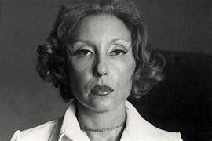
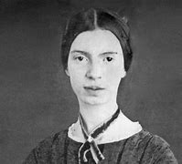

Nessa seção destacamos escritores que contribuiram para a literatura. Conheça um pouco mais sobre a vida deles e a obra de cada um deles.
Clarice Lispector
Biografia:
Clarice Lispector nasceu em 10 de dezembro de 1920 em Chechelnyk, na Ucrânia, em uma família de origem judaica. Aos dois meses de idade, imigrou com sua família para o Brasil, estabelecendo-se em Maceió, Alagoas, e posteriormente em Recife, Pernambuco. Estudou Direito na Universidade do Brasil, no Rio de Janeiro, mas dedicou-se principalmente á literatura e ao jornalismo. Clarice se naturalizou-se brasileira e é considerada uma das maiores escritoras do século XX. Faleceu no Rio de Janeiro em 9 de dezembro de 1977.
Obras Publicadas:
Perto do Coração Selvagem (1943)
Romance de estreia que foi revolucionário na literatura brasileira, recebendo o Prêmio Graça Aranha.
O Lustre (1946)
Segundo romance, que explora temas de isolamento e identidade pessoal.
A Cidade Sitiada (1949)
Romance que aborda a vida de uma jovem mulher em uma cidade fictícia, explorando o sentimento de alienação.
A Maçã no Escuro (1961)
Romance que trata da busca de um homem por si mesmo após cometer um crime.
A Paixão Segundo G.H. (1964)
Romance filosófico sobre a transformação existencial de uma mulher.
Uma Aprendizagem ou O Livro dos Prazeres (1969)
Romance que narra o despertar emocional e espiritual de uma professora.
Água Viva (1973)
Obra experimental que flui como um monólogo introspectivo.
A Hora da Estrela (1977)
Seu último romance, que narra a vida de uma nordestina pobre no Rio de Janeiro, publicado pouco antes de sua morte.
Prêmios e Reconhecimentos:
• Prêmio Graça Aranha pelo romance "Perto do Coração Selvagem" em 1944.
• Clarice é amplamente estudada e celebrada em círculos literários e acadêmicos ao redor do mundo, reconhecida por sua profunda contribuição à literatura.
Contribuições e Impacto:
• Suas obras são conhecidas por explorar a complexidade da mente humana e as questões existenciais.
• Influenciou vários escritores contemporâneos e é estudada em cursos de literatura ao redor do mundo.
• Seu estilo inovador e introspectivo trouxe uma nova perspectiva para a literatura brasileira e mundial.
Estilo e Temáticas
• Estilo Literário:
Lispector é conhecida por seu estilo introspectivo, com uma prosa rica em fluxo de consciência e introspecção psicológica.
• Temáticas Recorrentes
Identidade, existência, subjetividade, a experiência feminina, a busca pelo sentido da vida.
Citações e Críticas
• Citação Famosa:
"Renda-se, como eu me rendi. Mergulhe no que você não conhece como eu mergulhei."
• Críticas:
Recebeu elogios por sua originalidade e profundidade psicológica. O crítico literário Benedito Nunes considera que "sua obra é um dos marcos mais altos da literatura brasileira".
Curiosidades e Fatos Interessantes:
• Clarice Lispector foi uma das primeiras mulheres a estudar direito na Universidade do Brasil.
• Durante sua carreira, trabalhou como jornalista, escrevendo colunas em revistas populares.
• Embora nascida na Ucrânia, se considerava profundamente brasileira e sua obra reflete isso.
Emily Dickinson
Biografia:
Emily Dickinson nasceu em 10 de dezembro de 1830 em Amherst, Massachusetts, Estados Unidos. Viveu a maior parte de sua vida na casa da família, onde levou uma vida reclusa e se dedicou intensamente à escrita. Apesar de sua reclusão, manteve correspondência com vários amigos e familiares. Sua obra poética foi pouco reconhecida em vida, mas após sua morte, Emily Dickinson tornou-se uma das mais importantes e influentes poetisas americanas. Faleceu em 15 de maio de 1886, em Amherst.
Obras Publicadas
• Poems (1890)
Primeira coleção de poemas publicada postumamente, editada por Mabel Loomis Todd e Thomas Wentworth Higginson.
• Poems: Second Series (1891)
Segunda coleção de poemas, também editada postumamente por Todd e Higginson.
• Poems: Third Series (1896)
Terceira coleção de poemas, completando a série inicial de suas obras publicadas após sua morte.
• The Complete Poems of Emily Dickinson (1955)
Compilação definitiva dos poemas de Dickinson, editada por Thomas H. Johnson, que restaurou muitos dos poemas à sua forma original, sem as alterações feitas pelos editores anteriores.
Prêmios e Reconhecimentos
• Embora Emily Dickinson não tenha recebido prêmios durante sua vida, seu impacto póstumo na literatura e poesia americana é imensurável.
• Dickinson é hoje reconhecida como uma das maiores poetisas da literatura americana e mundial, sendo amplamente estudada e admirada.
Contribuições e Impacto:
• Dickinson revolucionou a poesia com seu estilo único, quebrando convenções da métrica e rima.
• Seu trabalho influenciou poetas modernistas e continua a ser uma fonte de inspiração para escritores e leitores.
Estilo e Temáticas
• Estilo Literário:
Poemas curtos, uso de maiúsculas e pontuação idiossincrática, métrica inovadora.
• Temáticas Recorrentes
Morte, imortalidade, natureza, amor, dor, identidade, e a busca pelo significado da existência.
Citações e Críticas
• Citação Famosa:
"Hope is the thing with feathers - That perches in the soul - And sings the tune without the words - And never stops - at all."
tradução:
"A esperança é a coisa com penas - Que se empoleira na alma - E canta a melodia sem as palavras - E nunca pára - de todo."
• Críticas:
Recebeu elogios por sua originalidade, profundidade emocional e habilidade de explorar temas complexos com simplicidade e intensidade.
Curiosidades e Fatos Interessantes:
• Emily Dickinson viveu grande parte de sua vida reclusa, raramente saindo de casa depois de seus trinta anos.
• Usava vestes brancas quase sempre e manteve correspondências extensas com amigos e família.
• Após sua morte, sua irmã Lavinia encontrou uma caixa com quase 1.800 poemas que Emily havia escrito, levando à publicação póstuma e reconhecimento de seu talento literário.
Cecília Meireles

Biografia:
Cecília Meireles ou Cecília Benevides de Carvalho Meireles nasceu em 7 de novembro de 1901 no Rio de Janeiro, DF. Cecília Meireles foi uma jornalista, pintora, poeta, escritora e professora brasileira. É um nome canônico do modernismo brasileiro, uma das grandes poetas da língua portuguesa e é amplamente considerada a melhor poeta do Brasil, pois que tenha combatido a palavra poetisa por causa da discriminação de gênero que apenas depunha outras artistas, como se houvesse caminhos distintos para um poeta.
Obras Publicadas
• Espectros (1919)
Primeira obra publicada, que já demonstrava seu talento precoce.
• Baladas para El-Rei (1925)
• Viagem (1939)
Considerada uma de suas obras mais importantes, recebeu o Prêmio de Poesia da Academia Brasileira de Letras.
• Mar Absoluto (1945)
• Romanceiro da Inconfidência (1953)
Uma das obras mais aclamadas, retratando a história da Inconfidência Mineira.
• Solombra (1963)
• Ou Isto ou Aquilo (1964)
Um clássico da literatura infantil brasileira, com poemas que encantam tanto crianças quanto adultos.
Prêmios e Reconhecimentos
• Prêmio de Poesia da Academia Brasileira de Letras por Viagem (1939).
• Medalha de Ouro da Sociedade Felipe de Oliveira em 1948.
• Reconhecida como uma das maiores poetisas da língua portuguesa e uma das vozes mais importantes da literatura brasileira.
Contribuições e Impacto:
• Cecília Meireles contribuiu significativamente para a literatura brasileira com sua poesia lírica e introspectiva.
• Sua obra abrange temas universais como a transitoriedade da vida, a natureza e a espiritualidade, influenciando gerações de leitores e escritores.
Estilo e Temáticas
• Estilo Literário:
Cecília Meireles é conhecida por sua poesia lírica, marcada por uma linguagem fluida e musicalidade, com influências do simbolismo e modernismo.
• Temáticas Recorrentes
Temporalidade, morte, espiritualidade, natureza, memória e sentimentos humanos profundos.
Citações e Críticas
• Citação Famosa:
"Aprendi com as primaveras a deixar-me cortar e a voltar sempre inteira."
• Críticas:
Elogiada por sua habilidade em combinar simplicidade e profundidade, Cecília é vista como uma mestre em evocar emoções e reflexões através de sua poesia.
Curiosidades e Fatos Interessantes:
• Cecília Meireles teve um papel importante na educação, fundando a primeira biblioteca infantil do Rio de Janeiro em 1934.
• Viajava frequentemente e sua experiência internacional influenciou sua escrita, proporcionando uma perspectiva global em suas obras.
• Foi uma defensora ativa da literatura infantil, acreditando na importância de introduzir as crianças ao mundo da poesia desde cedo.
Cecília Meireles é uma das figuras mais ilustres da literatura brasileira, cuja obra continua a ressoar profundamente com leitores de todas as idades, celebrando a beleza da vida e a profundidade da experiência humana.
Carolina Maria de Jesus

Biografia:
Carolina Maria de Jesus nasceu em 14 de março de 1914, na cidade de Sacramento, em Minas Gerais, numa comunidade rural, de pais analfabetos. Era filha ilegítima de um homem casado e foi maltratada durante toda sua infância. Aos sete anos, sua mãe a obrigou a frequentar a escola, depois que a esposa de um rico fazendeiro decidiu pagar seus estudos, mas ela interrompeu o curso no segundo ano, tendo já conseguido aprender a ler e a escrever e desenvolvido o gosto pela leitura. Carolina não negava sua religiosidade, referia-se a Deus em seu diário.
Obras Publicadas
• Quarto de Despejo: Diário de uma Favelada (1960)
Seu livro mais famoso, baseado nos diários que mantinha, descrevendo a vida na favela do Canindé, em São Paulo. Foi traduzido para várias línguas e teve grande impacto tanto no Brasil quanto no exterior.
• Outros Trabalhos:
• Casa de Alvenaria: Diário de uma Ex-Favelada (1961)
Continuação de Quarto de Despejo, narrando sua vida após a publicação de seu primeiro livro.
• Pedaços da Fome (1963)
Coletânea de contos.
• Provérbios (1963)
Coleção de ditados e reflexões.
Prêmios e Reconhecimentos
• Carolina Maria de Jesus é considerada uma das mais importantes escritoras negras da literatura brasileira.
• Recebeu reconhecimento internacional e seus livros foram amplamente elogiados por sua honestidade e retrato cru da pobreza urbana.
Contribuições e Impacto:
• Suas obras são fundamentais para a compreensão da realidade das favelas brasileiras nos anos 1950 e 1960.
• Carolina deu voz aos marginalizados e trouxe à luz as condições desumanas em que viviam os moradores de favelas, contribuindo para debates sobre desigualdade social e direitos humanos.
Estilo e Temáticas
• Estilo Literário:
Carolina escrevia de forma direta e crua, utilizando uma linguagem simples, mas poderosa, para descrever sua realidade.
• Temáticas Recorrentes
Pobreza, fome, desigualdade social, racismo, luta pela sobrevivência e dignidade.
Citações e Críticas
• Citação Famosa:
"Ah, comigo o mundo vai modificar-se. Não gosto do mundo como ele é."
• Críticas:
Sua obra foi amplamente elogiada por sua autenticidade e impacto social. Críticos destacam a importância de seus relatos para a literatura e história social do Brasil.
Curiosidades e Fatos Interessantes:
• Carolina escrevia seus diários em cadernos que encontrava no lixo enquanto trabalhava como catadora.
• Após o sucesso de seu primeiro livro, teve uma breve melhoria em suas condições de vida, mas continuou a enfrentar dificuldades financeiras.
• Seus diários e outros escritos foram posteriormente redescobertos e publicados, continuando a inspirar e influenciar gerações de leitores e escritores.
Conceição Evaristo

Biografia:
Maria da Conceição Evaristo de Brito é uma notável professora e escritora brasileira contemporânea sendo especialmente ativa nos movimentos pela luta negra. A autora, que publica poemas, ficção e ensaios, nasceu no dia 29 de novembro de 1946 em Belo Horizonte, Minas Gerais. Em 1973, Conceição se mudou para o Rio de Janeiro. Lá se formou em Letras pela Universidade Federal do Rio de Janeiro. Mais tarde, concluiu um mestrado em Literatura Brasileira pela Pontifícia Universidade Católica do Rio de Janeiro defendendo a dissertação Literatura Negra: uma poética de nossa afro-brasilidade (1996).
Obras Publicadas
• Ponciá Vicêncio (romance, 2003)
Seu primeiro romance, que aborda a vida de uma mulher negra no Brasil e sua luta por identidade e liberdade.
• Becos da Memória (romance, 2006)
Romance que narra histórias de moradores de uma favela, explorando questões de memória e identidade.
• Insubmissas Lágrimas de Mulheres (contos, 2011)
Coletânea de contos que explora a vida e os desafios das mulheres negras brasileiras.
• Poemas da Recordação e Outros Movimentos (poesia, 2008)
Livro de poesias que combina memórias pessoais e coletivas com questões sociais e políticas.
• Olhos d'água (contos, 2014)
• Histórias de leves enganos e parecenças (contos e novela, 2016)
• Canção para ninar menino grande (romance, 2018)
Prêmios e Reconhecimentos
• Prêmio Jabuti de Literatura em 2015 na categoria Contos e Crônicas por Olhos d'água.
• Seu trabalho é amplamente reconhecido e celebrado por sua contribuição à literatura brasileira e por dar voz às experiências das mulheres negras.
Contribuições e Impacto:
• Conceição Evaristo é uma das principais figuras da literatura afro-brasileira contemporânea, trazendo à tona questões de raça, gênero e classe em suas obras.
• Sua escrita aborda a resistência e a resiliência das mulheres negras, contribuindo para a visibilidade e valorização dessas experiências na literatura brasileira.
Estilo e Temáticas
• Estilo Literário:
Evaristo é conhecida por seu estilo poético e envolvente, utilizando uma linguagem rica em simbolismo e profundamente emocional.
• Temáticas Recorrentes
Racismo, discriminação de gênero, desigualdade social, memória, identidade, e a luta por justiça e dignidade.
Citações e Críticas
• Citação Famosa:
"A nossa escrevivência não pode ser lida como histórias para 'ninar os da casa grande', e sim para incomodá-los em seus sonhos injustos."
• Críticas:
Conceição Evaristo é amplamente elogiada por sua capacidade de capturar a complexidade das experiências das mulheres negras e por seu compromisso com a justiça social através da literatura.
Curiosidades e Fatos Interessantes:
• Conceição Evaristo cunhou o termo "escrevivência" para descrever sua prática literária, que entrelaça escrita e vivência, destacando a importância das experiências pessoais na criação literária.
• Além de escritora, Evaristo é uma ativista social, participando de movimentos e debates sobre questões raciais e de gênero no Brasil.
• Seu trabalho é frequentemente incluído em programas educacionais e projetos culturais voltados para a valorização da cultura afro-brasileira.
Conceição Evaristo é uma voz poderosa na literatura brasileira contemporânea, cujas obras desafiam preconceitos e promovem uma maior compreênsão e valorização das experiências das mulheres negras. Seu legado literário e ativista continua a inspirar e transformar a sociedade.
Djamila Ribeiro

Biografia:
Djamila Taís Ribeiro dos Santos nasceu no dia 1 de agosto de 1980, é uma filósofa e jornalista feminista negra brasileira. Djamila é formada em Filosofia pela Universidade Federal de São Paulo (UNIFESP), onde também concluiu seu mestrado em Filosofia Política. Além de escritora, é uma destacada ativista social, palestrante, colunista e pesquisadora, especialmente nas áreas de feminismo negro e teoria crítica da raça.
Obras Publicadas
• O Que É Lugar de Fala? (2017)
Uma obra fundamental que explora o conceito de "lugar de fala" e a importância de reconhecer e valorizar as vozes de grupos marginalizados.
• Quem Tem Medo do Feminismo Negro? (2018)
Coletânea de ensaios que aborda diversas questões relacionadas ao feminismo negro e às lutas das mulheres negras no Brasil.
• Pequeno Manual Antirracista (2019)
Um guia prático que oferece reflexões e ações concretas para combater o racismo no dia a dia.
• Cartas para Minha Avó (2021)
Livro que mistura memórias pessoais e ensaios, homenageando sua avó e refletindo sobre as influências familiares em sua trajetória.
Prêmios e Reconhecimentos
• Djamila Ribeiro recebeu diversos prêmios e honrarias por sua contribuição à sociedade, incluindo o Prêmio Jabuti de 2020 na categoria Ciências Humanas pelo livro "Pequeno Manual Antirracista."
• Reconhecida internacionalmente por seu ativismo e por sua influência nas discussões sobre raça e gênero.
Contribuições e Impacto:
• Djamila Ribeiro tem sido uma voz crucial na promoção do feminismo negro no Brasil, trazendo à tona discussões sobre racismo, desigualdade de gênero e direitos humanos.
• Seu trabalho tem impactado a educação e a cultura, ajudando a promover uma maior conscientização e ação contra o racismo e a discriminação.
Estilo e Temáticas
• Estilo Literário:
Ribeiro é conhecida por sua escrita clara e acessível, que combina rigor acadêmico com uma linguagem envolvente e direta.
• Temáticas Recorrentes
Racismo, feminismo negro, desigualdade social, direitos humanos, interseccionalidade e a importância do lugar de fala.
Citações e Críticas
• Citação Famosa:
"O silêncio das negras é uma forma de resistência."
• Críticas:
Djamila Ribeiro é amplamente elogiada por sua capacidade de articular de maneira didática e poderosa questões complexas sobre raça e gênero, tornando-as acessíveis a um público amplo.
Curiosidades e Fatos Interessantes:
• Djamila Ribeiro foi Secretária Adjunta de Direitos Humanos na cidade de São Paulo, onde trabalhou em políticas públicas voltadas para a igualdade racial.
• Ela é fundadora do selo editorial Sueli Carneiro, que publica obras de autoras negras e promove a diversidade na literatura brasileira.
• Além de seu trabalho literário, Djamila é uma presença constante em eventos acadêmicos, culturais e midiáticos, promovendo discussões sobre temas sociais urgentes.
Djamila Ribeiro é uma das vozes mais influentes no Brasil contemporâneo, cujas obras e ativismo continuam a desafiar estruturas de poder e a promover uma sociedade mais justa e equitativa.
Sohn Won Pyung

Biografia:
Sohn Won Pyung é uma escritora e cineasta sul-coreana. Ela estudou Sociologia e Filosofia na Universidade Sogang e também formou-se em Direção de Cinema na Academia Coreana de Artes Cinematográficas. Sua carreira abrange tanto a literatura quanto o cinema, onde trabalha como roteirista e diretora.
Obras Publicadas
• Almond (2017)
Este romance aclamado internacionalmente conta a história de Yunjae, um garoto com alexitimia, uma condição que dificulta a experiência e expressão de emoções. A obra explora temas de empatia, crescimento pessoal e as complexidades das relações humanas.
• Counterattack of the Thirty (2020)
Outro romance de Sohn que examina a vida e as lutas de mulheres na casa dos trinta anos na sociedade moderna.
• Outros Trabalhos:
Contribuições para roteiros de filmes e séries de televisão na Coreia do Sul.
Prêmios e Reconhecimentos
• Almond recebeu o Changbi Prize for Young Adult Fiction em 2017, destacando-se como uma obra significativa na literatura juvenil.
• O romance também foi traduzido para várias línguas, ganhando reconhecimento internacional e ampliando a visibilidade de Sohn como uma escritora de talento.
Contribuições e Impacto:
• Sohn Won Pyung é conhecida por sua habilidade em abordar temas psicológicos e emocionais de forma sensível e envolvente.
• Suas obras oferecem uma visão profunda sobre questões de identidade, crescimento e as relações interpessoais, contribuindo para uma compreensão mais ampla das experiências humanas.
Estilo e Temáticas
• Estilo Literário:
Sohn tem um estilo claro e acessível, caracterizado por uma narrativa emocionalmente ressonante e personagens bem desenvolvidos.
• Temáticas Recorrentes
Empatia, relações familiares, crescimento pessoal, dificuldades emocionais e as complexidades das interações humanas.
Citações e Críticas
• Citação Famosa:
"Não é a ausência de emoções que torna alguém um monstro, mas a incapacidade de reconhecer e valorizar a humanidade nos outros." (parafraseando um tema central de Almond).
• Críticas:
Seu trabalho é elogiado pela profundidade emocional e pela capacidade de tornar acessíveis temas complexos, como as dificuldades emocionais e psicológicas.
Curiosidades e Fatos Interessantes:
• Além de sua carreira literária, Sohn Won Pyung também é ativa na indústria cinematográfica, escrevendo e dirigindo filmes que exploram temas semelhantes aos de seus romances.
• Seu interesse por questões psicológicas e sociais reflete-se tanto em seu trabalho literário quanto cinematográfico, fazendo dela uma artista multifacetada com uma abordagem única para contar histórias.
Won Pyung Sohn é uma figura importante na literatura contemporânea, cujas obras oferecem insights valiosos sobre a condição humana e promovem uma maior empatia e compreensão entre os leitores. Sua combinação de sensibilidade literária e habilidade narrativa a torna uma voz poderosa na literatura sul-coreana e além.
sVitor Martins

Biografia:
Vitor Martins nasceu em 20 de abril de 1991. Vitor Martins é formado em Design Gráfico. Além de escritor, ele é ilustrador, traduzindo e adaptando diversas obras. Vitor ganhou destaque no cenário literário brasileiro com suas histórias voltadas para o público jovem, explorando temas de identidade, amor e aceitação.
Obras Publicadas
• Quinze Dias (2017)
Um romance jovem adulto que conta a história de Felipe, um adolescente introvertido e gay que, durante as férias escolares, começa a se abrir para novas experiências e amizades, especialmente com seu vizinho Caio.
• Um Milhão de Finais Felizes (2018)
A narrativa segue Jonas, um jovem que trabalha em uma livraria e sonha em ser escritor. O livro explora suas descobertas sobre si mesmo e seus sentimentos ao se apaixonar por Arthur.
• Participação em Coletâneas:
• Todo Mundo Tem Uma Primeira Vez (2020)
Coletânea de contos sobre experiências de primeira vez, onde Vitor contribuiu com uma história.
• Organiza e participa de várias antologias voltadas para a diversidade e inclusão.
Prêmios e Reconhecimentos
• Vitor Martins é amplamente reconhecido por seu trabalho na literatura jovem adulto, especialmente por suas contribuições para a representação LGBTQ+.
• Seus livros receberam elogios pela sensibilidade com que tratam temas de identidade, amor e aceitação, conquistando um público fiel e engajado.
Contribuições e Impacto:
• Vitor Martins tem um papel significativo na promoção da diversidade na literatura brasileira. Suas histórias ajudam a dar visibilidade a jovens LGBTQ+, oferecendo narrativas que refletem suas experiências e desafios.
• Ele contribui para um diálogo mais aberto sobre questões de identidade e aceitação, tanto através de sua escrita quanto de sua presença ativa nas redes sociais e eventos literários.
Estilo e Temáticas
• Estilo Literário:
Vitor é conhecido por seu estilo acessível e envolvente, com diálogos autênticos e personagens bem desenvolvidos. Ele equilibra humor e emoção de maneira que ressoe profundamente com seus leitores.
• Temáticas Recorrentes
Identidade LGBTQ+, aceitação pessoal, amor, amizade, superação de inseguranças e desafios da adolescência e juventude.
Citações e Críticas
• Citação Famosa:
"A vida é uma coleção de pequenas coisas. Os momentos mais simples podem ser os mais felizes."
• Críticas:
Vitor Martins é elogiado por sua habilidade de capturar as nuances da experiência adolescente, particularmente no que se refere a questões de identidade e aceitação. Sua escrita é apreciada por ser sincera, tocante e inclusiva.
Curiosidades e Fatos Interessantes:
• Além de escritor, Vitor Martins é ilustrador e frequentemente combina suas habilidades artísticas com sua escrita, criando capas e ilustrações para seus livros.
• Ele é muito ativo nas redes sociais, onde interage com seus leitores e compartilha insights sobre seu processo criativo e vida pessoal.
• Vitor Martins começou sua carreira publicando histórias no Wattpad, uma plataforma online de leitura e escrita, antes de ser publicado por uma editora tradicional.
Clara Alves

Biografia:
Clara Alves nasceu em 3 de janeiro de 1995. Clara Alves formou-se em Jornalismo pela Universidade Federal Fluminense (UFF). Além de escritora, é editora e revisora. Clara começou sua carreira publicando histórias online antes de alcançar sucesso na literatura jovem adulta com temas de diversidade e representatividade LGBTQ+.
Obras Publicadas
• Conectadas (2019)
Este livro, que ganhou destaque por sua abordagem sensível e autêntica da temática LGBTQ+, narra a história de Raíssa e Ayla, duas garotas que se conhecem em um jogo online e desenvolvem um relacionamento que transcende o virtual para o real.
• Conectadas: Segunda Temporada (2023)
Continuação de Conectadas, explorando o desenvolvimento do relacionamento entre as protagonistas e novos desafios em suas vidas.
Prêmios e Reconhecimentos
• Conectadas foi bem recebido pela crítica e pelos leitores, destacando-se pela representatividade LGBTQ+ e pela narrativa envolvente e bem construída.
• Clara Alves é considerada uma das vozes emergentes mais promissoras na literatura jovem adulta brasileira, especialmente na promoção de diversidade e inclusão.
Contribuições e Impacto:
• Clara Alves é reconhecida por trazer à tona histórias de amor e identidade LGBTQ+ em um formato acessível e envolvente para jovens leitores.
• Sua obra contribui significativamente para a visibilidade e aceitação de jovens LGBTQ+, proporcionando narrativas onde eles podem se ver representados de maneira positiva e autêntica.
Estilo e Temáticas
• Estilo Literário:
Clara é conhecida por um estilo de escrita leve, cativante e envolvente, com diálogos autênticos e personagens bem desenvolvidos.
• Temáticas Recorrentes
Amor e relacionamento LGBTQ+, descobertas pessoais, amizade, desafios do crescimento, aceitação e diversidade.
Citações e Críticas
• Citação Famosa:
"A conexão que sentimos no virtual pode ser tão real e transformadora quanto qualquer encontro físico."
• Críticas:
Clara Alves é amplamente elogiada por sua capacidade de criar histórias que combinam romance e questões sociais de forma acessível e emocionalmente ressonante. Sua escrita é valorizada por sua sensibilidade e autenticidade.
Curiosidades e Fatos Interessantes:
• Clara Alves começou publicando suas histórias em plataformas online, como Wattpad, antes de ser descoberta por editoras tradicionais.
• Além de escritora, Clara é editora e revisora, o que reflete seu profundo envolvimento com o mundo literário.
• Ela é ativa nas redes sociais, onde compartilha suas experiências como escritora e interage com seus leitores.
Clara Alves é uma figura significativa na literatura jovem adulta brasileira contemporânea, cuja obra não só entretém, mas também promove uma maior compreensão e aceitação da diversidade. Sua escrita autêntica e envolvente continua a inspirar jovens leitores e a enriquecer a literatura brasileira com histórias de amor e identidade.
Victoria Schwab

Biografia:
Victoria Elizabeth (V. E.) Schwab é uma escritora e criadora de conteúdo estadunidense. Schwab nasceu em 7 de julho de 1987 na Califórnia, mas cresceu em Nashville, Tennessee. Schwab foi para uma escola preparatória do sul só para meninas. Victoria Schwab é graduada em Belas Artes pela Washington University em St. Louis. Conhecida por sua escrita versátil, Victoria, que também publica sob o nome V.E. Schwab, ganhou reconhecimento internacional por suas obras de fantasia e ficção científica, tanto para jovens adultos quanto para adultos.
Obras Publicadas
• A Guardiã de Histórias (2013)
Primeiro livro da série "Arquivos", que segue a jovem Mackenzie Bishop, uma Guardiã encarregada de manter os Históricos, ecos de pessoas mortas, em ordem.
• A Cidade de Bronze (2018)
Série "City of Ghosts", que acompanha a jovem Cassidy Blake, que pode ver fantasmas.
• A Darker Shade of Magic (2015)
Primeiro livro da trilogia "Shades of Magic", acompanha Kell, um Antari capaz de viajar entre mundos paralelos, e Delilah Bard, uma ladra aspirante a pirata. A série inclui A Gathering of Shadows (2016) e A Conjuring of Light (2017).
• Vicious (2013)
Primeiro livro da série "Villains", sobre dois amigos universitários que ganham superpoderes e se tornam inimigos. A continuação é Vengeful (2018).
• The Invisible Life of Addie LaRue (2020)
Romance que narra a história de Addie LaRue, uma jovem que faz um pacto faustiano para viver para sempre, mas é esquecida por todos que encontra.
Prêmios e Reconhecimentos
• The Invisible Life of Addie LaRue recebeu ampla aclamação da crítica e foi indicado a vários prêmios, consolidando Schwab como uma das principais autoras contemporâneas de fantasia.
• Seus livros frequentemente aparecem nas listas de best-sellers do New York Times.
Contribuições e Impacto:
• Victoria Schwab tem sido uma voz influente na literatura de fantasia contemporânea, conhecida por seus mundos ricamente construídos e personagens complexos.
• Ela tem contribuído para a diversificação da literatura de fantasia, abordando temas de identidade, poder e moralidade.
Estilo e Temáticas
• Estilo Literário:
Schwab é conhecida por sua prosa lírica e evocativa, além de sua habilidade de construir mundos detalhados e atmosferas intensas.
• Temáticas Recorrentes
Identidade, poder, sacrifício, moralidade ambígua, solidão e a luta pela sobrevivência em mundos mágicos e muitas vezes sombrios.
Citações e Críticas
• Citação Famosa:
"A esperança é uma coisa poderosa. Alguns dizem que é uma força diferente da magia, mas eu não sou um deles." (A Darker Shade of Magic)
• Críticas:
Schwab é amplamente elogiada por sua habilidade em criar narrativas envolventes e emocionalmente ressonantes. Seus personagens são frequentemente destacados por sua profundidade e complexidade.
Curiosidades e Fatos Interessantes:
• Em entrevistas, Victoria Schwab discute frequentemente sua paixão por contar histórias que desafiam as expectativas e exploram o lado sombrio da natureza humana.
• Leitores e críticos destacam sua capacidade de criar mundos imaginários que são tanto maravilhosos quanto inquietantes.
Victoria Schwab é uma autora de destaque na literatura fantástica contemporânea, cujo trabalho não só entretém, mas também provoca reflexão e emoção. Suas histórias continuam a capturar a imaginação de leitores ao redor do mundo.